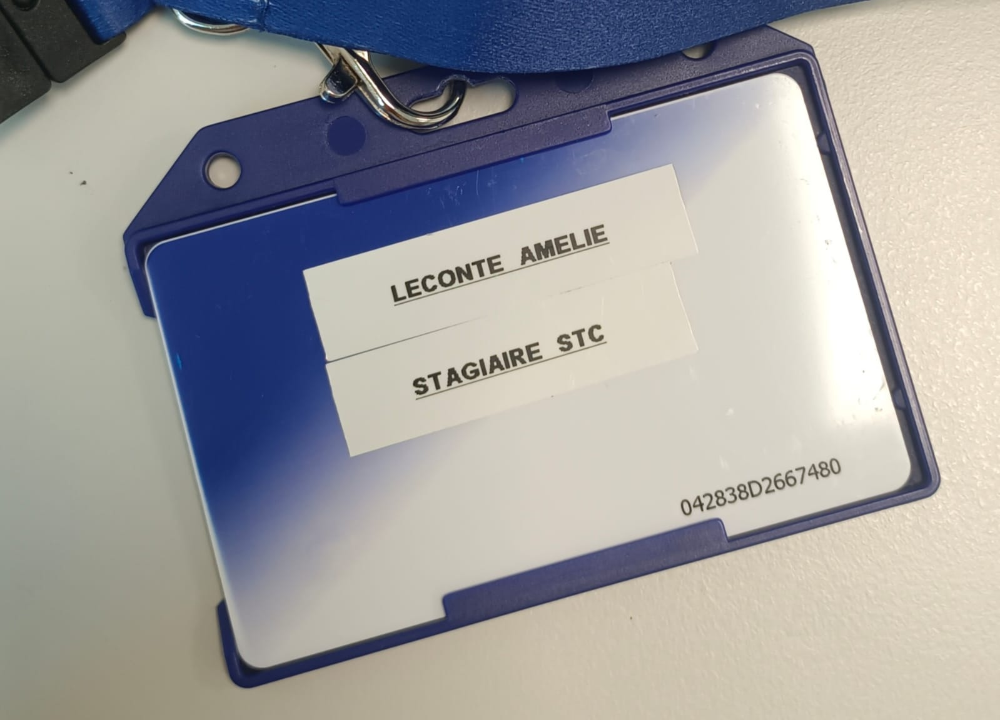

Il est temps de partager ce que j'ai pu tirer comme conclusion de ces observations :
- Ce qui m'a attiré ;
- Où est-ce que je me projette, sur quel poste et dans quel domaine ?
- Mon expérience en tant que stagiaire : comment s'imposer ?

Il est temps de partager ce que j'ai pu tirer comme conclusion de ces observations :
Ce qui est attirant dans le monde de l'entreprise :
Ce qui est attirant dans le monde de l'entreprise réside dans plusieurs aspects. Tout d'abord, la stabilité financière est un atout majeur, grâce aux revenus réguliers et sécurisés qu'une entreprise peut offrir. Les avantages sociaux tels que l'assurance santé et les plans de retraite contribuent également à cette sécurité, en apportant un soutien supplémentaire aux employés. De plus, la possibilité de recevoir des bonus et des augmentations basées sur la performance renforce cette stabilité.
Les opportunités de carrière représentent une autre facette attrayante du monde de l'entreprise. Il est motivant de constater que l'on n'est pas restreint à un unique poste. Les possibilités d'évoluer au sein de l'entreprise sont nombreuses et variées, permettant aux employés de se développer professionnellement et de gravir les échelons. Deux exemples très parlants que j'ai rencontrés sont les suivants : un technicien du STC prend l'année prochaine un poste dans le service informatique IT. Ou bien même le Directeur Général de Telehouse, ancien stagiaire au STC au moment où il était étudiant à Télécom SudParis, a par la suite intégré la branche commerciale de Telehouse avant de prendre sa direction. Cela donne un sentiment de progression et de réalisation personnelle.
Un environnement structuré est également un avantage significatif. Les horaires de travail sont définis, ce qui permet une meilleure organisation de la vie personnelle et professionnelle. En discutant plus personnellement avec les employés, je me suis rendue compte qu'une partie non négligeable a choisi le poste de technicien au STC en partie car les horaires et le salaire permettaient de concilier vie familiale et vie professionnelle, même si d'autres postes auraient pu leur offrir plus d'épanouissement. De plus, les employés bénéficient du cadre légal et réglementaire qui protège leurs droits, assurant ainsi un environnement de travail sûr et équitable. La participation à des projets importants, avec des budgets significatifs et des ressources adéquates, permet aux employés de s'engager dans des initiatives stimulantes et enrichissantes. La culture de l'entreprise, souvent marquée par un esprit d'équipe et des événements de cohésion, renforce le sentiment d'appartenance et de camaraderie. L'équipe a par exemple participé l'année dernière au 10K Adidas (course à pied à Paris), afin de renforcer les liens en interne.
Mes projets d'avenir :
De cette expérience, j'ai tiré des conclusions importantes pour mes projets personnels et professionnels. J'ai compris que le travail de technicienne dans un data center, bien que technique et intéressant, ne correspond pas à ce que je recherche pour ma carrière à long terme. Ce n’est pas que l’environnement de travail soit désagréable. Mais les tâches sont souvent répétitives et centrées sur la gestion du matériel, ce qui ne me permettrait pas de m’épanouir pleinement. Je préfère un rôle qui me donne plus de variété et de défis.
Je me vois donc plutôt dans l'administration réseau, en particulier l'administration logicielle. J'aime l'idée de travailler sur des systèmes informatiques et de trouver des solutions pour optimiser les performances des entreprises. Le côté plus stratégique de ce rôle me semble mieux correspondre à mes compétences et à ce que je veux accomplir.
Cette expérience a aussi confirmé mon intérêt pour le management d'équipe. J’ai apprécié non seulement le travail technique, mais aussi le fait de coordonner les efforts d'une équipe pour atteindre des objectifs communs. J'imagine ainsi commencer par un poste technique pour acquérir de l'expérience, puis passer à des fonctions de management. Avec une bonne base technique, je pourrai mieux comprendre les défis de mes futurs collègues et les aider plus efficacement.
Enfin, ce qui pourrait me déplaire dans le monde de l'entreprise est de faire des tâches répétitives sans véritable impact. Je veux pouvoir être maître de mes actions et voir les résultats de mes décisions. C’est pour cela que je pense que le rôle de manager, avec ses responsabilités et son influence sur l'équipe, serait plus satisfaisant pour moi. Le management me permettrait de jouer un rôle clé dans les projets et de contribuer à la culture de l'entreprise, ce qui correspond à ce que je recherche dans ma carrière.
Je trouve cela également pertinant de parler de mon experience en tant que femme dans un milieu exclusivement masculin. Jusqu'à maintenant, je n'avais jamais ressenti et jamais fait attention à cette différence. Pourtant, de nombreuses personnes avaient déjà pointé du doigt cela.
C'est pendant mon stage que j'ai ressenti pour la première fois une différence. Pendant ces 4 semaines, je n'ai jamais été rabaissée, et je ne me suis jamais sentie "pas à ma place". Cependant, j'ai noté que l'équipe avait rarement, voire jamais accueilli de femme. Les situations qui me l'ont fait remarquer étaient généralement générée par des personnes plus agées, et n'étaient jamais dénigrantes, mais j'avoue m'être sentie parfois mal à l'aise par certaines remarques.
Comment je me projette vis à vis de cela ? Les mentalités changent, et je pense que si je n'ai jamais ressenti de différence avant de rentrer dans le monde de l'entreprise, c'est que j'avais cotoyé des personnes de la même génération que moi, qui sont très conscientes de l'enjeu d'inclusivité actuel. Je pense donc que les situations génantes se feront rares dans le futur, puisque je suis vouée à être entourée par cette même génération.
De plus, comme me l'a fait remarquer un technicien, être une femme dans un milieu masculin est aussi une force car cela fait de ma candidature un "profil unique", dans une société qui promouvoit aujourd'hui la variété.
En résumé, je pense qu'être une femme dans le milieu informatique pose aujourd'hui beaucoup moins de problème, du moins de ce que j'ai vécu. Il faut néanmoins être prête à subir des remarques, qui ne sont pour la plupart jamais dénigrante mais qui démontre un traitement différent, et qui peuvent parfois gêner.
J'ai jusque là exposé ce qu'il me plairait de faire. Mais les conversations que j'ai eues avec les techniciens m'ont également ouvert les yeux sur le fait qu'il faut savoir concilier vie professionnelle et vie familiale. Ceci de deux point de vue différents : le temps et l'argent. Prendre un poste aussi intéressant qu'il soit ne doit pas être trop prenant si l'on veut vouloir profiter de sa famille. De même, il faut pouvoir subvenir aux besoins de son entourage, ce qui implique faire des sacrifices.
C'est ainsi que, malgré mon intêret pour l'administration réseau, un métier plus porteur serait devOps (administration réseau et développement). La conclusion, qui m'a été donnée lors d'une discussion avec un des techniciens est que, dans un secteur aussi dynamique et mouvant que l'informatique, il faut être polyvalent et savoir coder (au minimum en bash et python) pour pouvoir s'intégrer dans tous les projets. En effet, la force d'un travailleur repose sur sa capacité à s'adapter, car on lui demandera bien plus souvent qu'on ne le croit, d'accomplir des tâches qu'il n'a jamais effectuées.
Mon expérience en tant que stagiaire :
Mon expérience en tant que stagiaire a été marquée par plusieurs défis. En première année d'école d'ingénieur, la formation est très généraliste, ce qui rend parfois difficile de se faire une place en tant que stagiaire dans une équipe où certains membres ont des dizaines d'années d'expérience. Pour profiter pleinement de son stage, un stagiaire doit savoir développer trois qualités essentielles. La curiosité est primordiale : poser des questions et montrer de l'intérêt pour les différents aspects de l'entreprise permet d'apprendre et de s'intégrer. S'impliquer et être proactif est également crucial : proposer son aide sur différents projets, même ceux qui ne sont pas directement liés à notre domaine d'intérêt initial, permet de se rendre utile. Enfin, chercher des retours réguliers montre que l'on est soucieux de réussir et tisse une relation de confiance avec les supérieurs et collègues.
J'ai personnellement trouvé que les premiers jours à l'entreprise étaient les plus compliqués. On nous donne énormement d'informations à retenir si l'on veut bien s'intégrer. De plus, il est plus compliqué de prendre part aux discussions car nous ne connaissons généralement pas les sujets de ces discussions. J'ai souvent eu la sensation d'être de "trop" car je n'étais pas un élément moteur des débats. Mais ceci s'est vite effacé lorsque je me suis mis en phase avec l'ambiance du STC, j'ai compris que les techniciens avaient vécu la même chose que moi en arrivant et que la situation était normale. Tout insertion dans un nouvel environnement demande un temps d'adpatation.
Il était aussi intéressant d'imaginer ce qu'un alternant peut vivre comme expérience. Je n'avais jamais imaginé un jour faire une formation en alternance avant mon stage. Cependant, j'y vois maintenant les intérêts : L'apprentissage par alternance est bénéfique car il permet de mêler théorie et pratique, rendant les connaissances plus concrètes et utiles. Il aide aussi à acquérir des compétences directement applicables, ce qui facilite la recherche d'emploi après les études. De plus, il offre l'occasion de créer un réseau professionnel, ce qui peut aider à trouver un job plus facilement. En travaillant régulièrement en entreprise, les étudiants apprennent à gérer les responsabilités, à s'adapter aux environnements de travail et à comprendre les dynamiques professionnelles, ce qui les prépare mieux à leur future carrière.